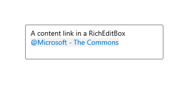
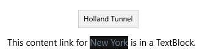

Content links in text controls
Content links provide a way to embed rich data in your text controls, which lets a user find and use more information about a person or place without leaving the context of your app.
Important
The Windows features that enable content links are not available in versions of Windows after Windows 10 version 1903. Content links for XAML text controls will not function in versions of Windows later than version 1903.
When the user prefixes an entry with the at (@) symbol in a RichEditBox, they’re shown a list of people and/or place suggestions that matches the entry. Then, for example, when the user picks a place, a ContentLink for that place is inserted into the text. When the user invokes the content link from the RichEditBox, a flyout is shown with a map and additional info about the place.
Important APIs: ContentLink class, ContentLinkInfo class, RichEditTextRange class
Note
The APIs for content links are spread across the following namespaces: Windows.UI.Xaml.Controls, Windows.UI.Xaml.Documents, and Windows.UI.Text.
Content links in rich edit vs. text block controls
There are two distinct ways to use content links:
- In a RichEditBox, the user can open a picker to add a content link by prefixing text with an @ symbol. The content link is stored as part the rich text content.
- In a TextBlock or RichTextBlock, the content link is a text element with usage and behavior much like a Hyperlink.
Here's how content links look by default in a RichEditBox and in a TextBlock.


Differences in usage, rendering, and behavior are covered in detail in the following sections. This table gives a quick comparison of the main differences between a content link in a RichEditBox and a text block.
| Feature | RichEditBox | text block |
|---|---|---|
| Usage | ContentLinkInfo instance | ContentLink text element |
| Cursor | Determined by type of content link, can't be changed | Determined by Cursor property, null by default |
| ToolTip | Not rendered | Shows secondary text |
Enable content links in a RichEditBox
The most common use of a content link is to let a user quickly add information by prefixing a person or place name with an ampersand (@) symbol in their text. When enabled in a RichEditBox, this opens a picker and lets the user insert a person from their contact list, or a nearby place, depending on what you’ve enabled.
The content link can be saved with the rich text content, and you can extract it to use in other parts of your app. For example, in an email app, you might extract the person info and use it to populate the To box with an email address.
Note
The content link picker is an app that’s part of Windows, so it runs in a separate process from your app.
Content link providers
You enable content links in a RichEditBox by adding one or more content link providers to the RichEditBox.ContentLinkProviders collection. There are 2 content link providers built into the XAML framework.
- ContactContentLinkProvider – looks up contacts using the People app.
- PlaceContentLinkProvider – looks up places using the Maps app.
Important
The default value for the RichEditBox.ContentLinkProviders property is null, not an empty collection. You need to explicitly create the ContentLinkProviderCollection before you add content link providers.
Here’s how to add the content link providers in XAML.
<RichEditBox>
<RichEditBox.ContentLinkProviders>
<ContentLinkProviderCollection>
<ContactContentLinkProvider/>
<PlaceContentLinkProvider/>
</ContentLinkProviderCollection>
</RichEditBox.ContentLinkProviders>
</RichEditBox>
You can also add content link providers in a Style and apply it to multiple RichEditBoxes like this.
<Page.Resources>
<Style TargetType="RichEditBox" x:Key="ContentLinkStyle">
<Setter Property="ContentLinkProviders">
<Setter.Value>
<ContentLinkProviderCollection>
<PlaceContentLinkProvider/>
<ContactContentLinkProvider/>
</ContentLinkProviderCollection>
</Setter.Value>
</Setter>
</Style>
</Page.Resources>
<RichEditBox x:Name="RichEditBox01" Style="{StaticResource ContentLinkStyle}" />
<RichEditBox x:Name="RichEditBox02" Style="{StaticResource ContentLinkStyle}" />
Here's how to add content link providers in code.
RichEditBox editor = new RichEditBox();
editor.ContentLinkProviders = new ContentLinkProviderCollection
{
new ContactContentLinkProvider(),
new PlaceContentLinkProvider()
};
Content link colors
The appearance of a content link is determined by its foreground, background, and icon. In a RichEditBox, you can set the ContentLinkForegroundColor and ContentLinkBackgroundColor properties to change the default colors.
You can't set the cursor. The cursor is rendered by the RichEditbox based on the type of content link - a Person cursor for a person link, or a Pin cursor for a place link.
The ContentLinkInfo object
When the user makes a selection from the people or places picker, the system creates a ContentLinkInfo object and adds it to the ContentLinkInfo property of the current RichEditTextRange.
The ContentLinkInfo object contains the information used to display, invoke, and manage the content link.
- DisplayText – This is the string that is shown when the content link is rendered. In a RichEditBox, the user can edit the text of a content link after it’s created, which alters the value of this property.
- SecondaryText – This string is shown in the tooltip of a rendered content link.
- In a Place content link created by the picker, it contains the address of the location, if available.
- Uri – The link to more information about the subject of the content link. This Uri can open an installed app or a website.
- Id - This is a read-only, per control, counter created by the RichEditBox control. It’s used to track this ContentLinkInfo during actions such as delete or edit. If the ContentLinkInfo is cut and paste back into the control, it will get a new Id. Id values are incremental.
- LinkContentKind – A string that describes the type of the content link. The built-in content types are Places and Contacts. The value is case sensitive.
Link content kind
There are several situations where the LinkContentKind is important.
- When a user copies a content link from a RichEditBox and pastes it into another RichEditBox, both controls must have a ContentLinkProvider for that content type. If not, the link is pasted as text.
- You can use LinkContentKind in a ContentLinkChanged event handler to determine what to do with a content link when you use it in other parts of your app. See the Example section for more info.
- The LinkContentKind influences how the system opens the Uri when the link is invoked. We’ll see this in the discussion of Uri launching next.
Uri launching
The Uri property works much like the NavigateUri property of a Hyperlink. When a user clicks it, it launches the Uri in the default browser, or in the app that's registered for the particular protocol specified in the Uri value.
The specific behavior for the 2 built in kinds of link content are described here.
Places
The Places picker creates a ContentLinkInfo with a Uri root of https://maps.windows.com/. This link can be opened in 3 ways:
- If LinkContentKind = "Places", it opens an info card in a flyout. The flyout is similar to the content link picker flyout. It’s part of Windows, and runs in a separate process from your app.
- If LinkContentKind is not "Places", it attempts to open the Maps app to the specified location. For example, this can happen if you’ve modified the LinkContentKind in the ContentLinkChanged event handler.
- If the Uri can’t be opened in the Maps app, the map is opened in the default browser. This typically happens when the user's Apps for websites settings don’t allow opening the Uri with the Maps app.
People
The People picker creates a ContentLinkInfo with a Uri that uses the ms-people protocol.
- If LinkContentKind = "People", it opens an info card in a flyout. The flyout is similar to the content link picker flyout. It’s part of Windows, and runs in a separate process from your app.
- If LinkContentKind is not "People", it opens the People app. For example, this can happen if you’ve modified the LinkContentKind in the ContentLinkChanged event handler.
Tip
For more info about opening other apps and websites from your app, see the topics under Launch an app with a Uri.
Invoked
When the user invokes a content link, the ContentLinkInvoked event is raised before the default behavior of launching the Uri happens. You can handle this event to override or cancel the default behavior.
This example shows how you can override the default launching behavior for a Place content link. Instead of opening the map in a Place info card, Maps app, or default web browser, you mark the event as Handled and open the map in an in-app WebView control.
<RichEditBox x:Name="editor"
ContentLinkInvoked="editor_ContentLinkInvoked">
<RichEditBox.ContentLinkProviders>
<ContentLinkProviderCollection>
<PlaceContentLinkProvider/>
</ContentLinkProviderCollection>
</RichEditBox.ContentLinkProviders>
</RichEditBox>
<WebView x:Name="webView1"/>
private void editor_ContentLinkInvoked(RichEditBox sender, ContentLinkInvokedEventArgs args)
{
if (args.ContentLinkInfo.LinkContentKind == "Places")
{
args.Handled = true;
webView1.Navigate(args.ContentLinkInfo.Uri);
}
}
ContentLinkChanged
You can use the ContentLinkChanged event to be notified when a content link is added, modified, or removed. This lets you extract the content link from the text and use it in other places in your app. This is shown later in the Examples section.
The properties of the ContentLinkChangedEventArgs are:
- ChangedKind - This ContentLinkChangeKind enum is the action within the ContentLink. For example, if the ContentLink is inserted, removed, or edited.
- Info - The ContentLinkInfo that was the target of the action.
This event is raised for each ContentLinkInfo action. For example, if the user copies and pastes several content links into the RichEditBox at once, this event is raised for each added item. Or if the user selects and deletes several content links at the same time, this event is raised for each deleted item.
This event is raised on the RichEditBox after the TextChanging event and before the TextChanged event.
Enumerate content links in a RichEditBox
You can use the RichEditTextRange.ContentLink property to get a content link from a rich edit document. The TextRangeUnit enumeration has the value ContentLink to specify the content link as a unit to use when navigating a text range.
This example shows how you can enumerate all the content links in a RichEditBox, and extract the people into a list.
<StackPanel Width="300">
<RichEditBox x:Name="Editor" Height="200">
<RichEditBox.ContentLinkProviders>
<ContentLinkProviderCollection>
<ContactContentLinkProvider/>
<PlaceContentLinkProvider/>
</ContentLinkProviderCollection>
</RichEditBox.ContentLinkProviders>
</RichEditBox>
<Button Content="Get people" Click="Button_Click"/>
<ListView x:Name="PeopleList" Header="People">
<ListView.ItemTemplate>
<DataTemplate x:DataType="ContentLinkInfo">
<TextBlock>
<ContentLink Info="{x:Bind}" Background="Transparent"/>
</TextBlock>
</DataTemplate>
</ListView.ItemTemplate>
</ListView>
</StackPanel>
private void Button_Click(object sender, RoutedEventArgs e)
{
PeopleList.Items.Clear();
RichEditTextRange textRange = Editor.Document.GetRange(0, 0) as RichEditTextRange;
do
{
// The Expand method expands the Range EndPosition
// until it finds a ContentLink range.
textRange.Expand(TextRangeUnit.ContentLink);
if (textRange.ContentLinkInfo != null
&& textRange.ContentLinkInfo.LinkContentKind == "People")
{
PeopleList.Items.Add(textRange.ContentLinkInfo);
}
} while (textRange.MoveStart(TextRangeUnit.ContentLink, 1) > 0);
}
ContentLink text element
To use a content link in a TextBlock or RichTextBlock control, you use the ContentLink text element (from the Windows.UI.Xaml.Documents namespace).
Typical sources for a ContentLink in a text block are:
- A content link created by a picker that you extracted from a RichTextBlock control.
- A content link for a place that you create in your code.
For other situations, a Hyperlink text element is usually appropriate.
ContentLink appearance
The appearance of a content link is determined by its foreground, background, and cursor. In a text block, you can set the Foreground (from TextElement) and Background properties to change the default colors.
By default, the Hand cursor is shown when the user hovers over the content link. Unlike RichEditBlock, text block controls don't change the cursor automatically based on the link type. You can set the Cursor property to change the cursor based on link type or other factors.
Here's an example of a ContentLink used in a TextBlock. The ContentLinkInfo is created in code and assigned to the Info property of the ContentLink text element that's created in XAML.
<StackPanel>
<TextBlock>
<Span xml:space="preserve">
<Run>This volcano erupted in 1980: </Run><ContentLink x:Name="placeContentLink" Cursor="Pin"/>
<LineBreak/>
</Span>
</TextBlock>
<Button Content="Show" Click="Button_Click"/>
</StackPanel>
private void Button_Click(object sender, RoutedEventArgs e)
{
var info = new Windows.UI.Text.ContentLinkInfo();
info.DisplayText = "Mount St. Helens";
info.SecondaryText = "Washington State";
info.LinkContentKind = "Places";
info.Uri = new Uri("https://maps.windows.com?cp=46.1912~-122.1944");
placeContentLink.Info = info;
}
Tip
When you use a ContentLink in a text control with other text elements in XAML, place the content in a Span container and apply the xml:space="preserve" attribute to the Span to keep the white space between the ContentLink and other elements.
Examples
In this example, a user can enter a person or place content link into a RickTextBlock. You handle the ContentLinkChanged event to extract the content links and keep them up-to-date in either a people list or places list.
In the item templates for the lists, you use a TextBlock with a ContentLink text element to show the content link info. The ListView provides its own background for each item, so the ContentLink background is set to Transparent.
<StackPanel Orientation="Horizontal" Grid.Row="1">
<RichEditBox x:Name="Editor"
ContentLinkChanged="Editor_ContentLinkChanged"
Margin="20" Width="300" Height="200"
VerticalAlignment="Top">
<RichEditBox.ContentLinkProviders>
<ContentLinkProviderCollection>
<ContactContentLinkProvider/>
<PlaceContentLinkProvider/>
</ContentLinkProviderCollection>
</RichEditBox.ContentLinkProviders>
</RichEditBox>
<ListView x:Name="PeopleList" Header="People">
<ListView.ItemTemplate>
<DataTemplate x:DataType="ContentLinkInfo">
<TextBlock>
<ContentLink Info="{x:Bind}"
Background="Transparent"
Cursor="Person"/>
</TextBlock>
</DataTemplate>
</ListView.ItemTemplate>
</ListView>
<ListView x:Name="PlacesList" Header="Places">
<ListView.ItemTemplate>
<DataTemplate x:DataType="ContentLinkInfo">
<TextBlock>
<ContentLink Info="{x:Bind}"
Background="Transparent"
Cursor="Pin"/>
</TextBlock>
</DataTemplate>
</ListView.ItemTemplate>
</ListView>
</StackPanel>
private void Editor_ContentLinkChanged(RichEditBox sender, ContentLinkChangedEventArgs args)
{
var info = args.ContentLinkInfo;
var change = args.ChangeKind;
ListViewBase list = null;
// Determine whether to update the people or places list.
if (info.LinkContentKind == "People")
{
list = PeopleList;
}
else if (info.LinkContentKind == "Places")
{
list = PlacesList;
}
// Determine whether to add, delete, or edit.
if (change == ContentLinkChangeKind.Inserted)
{
Add();
}
else if (args.ChangeKind == ContentLinkChangeKind.Removed)
{
Remove();
}
else if (change == ContentLinkChangeKind.Edited)
{
Remove();
Add();
}
// Add content link info to the list. It's bound to the
// Info property of a ContentLink in XAML.
void Add()
{
list.Items.Add(info);
}
// Use ContentLinkInfo.Id to find the item,
// then remove it from the list using its index.
void Remove()
{
var items = list.Items.Where(i => ((ContentLinkInfo)i).Id == info.Id);
var item = items.FirstOrDefault();
var idx = list.Items.IndexOf(item);
list.Items.RemoveAt(idx);
}
}